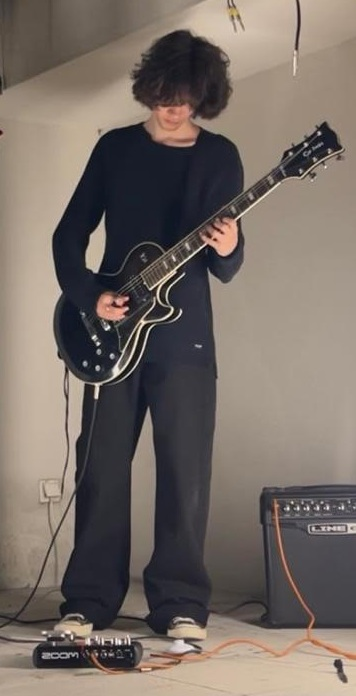

Sobre os membros
A Sétima Dominante (7imaDominante) é uma banda composta por dois músicos que trabalham em conjunto para criar música original. Cada elemento desempenha um papel fundamental no processo criativo, desde a composição até à produção final das músicas.
A combinação das competências dos dois membros permite desenvolver um som próprio, influenciado por bandas como Muse, Alice in Chains, Amor Electro, Soundgarden e Radiohead.
Funções na banda:
António Ferreira
- Vocalista principal.
- Pianista.
- Compositor das músicas.
Leonardo Gonçalves
- Guitarrista.
- Produtor musical.
- Responsável pelos arranjos e gravação.
Trabalho em equipa
- Criação de músicas originais.
- Desenvolvimento de arranjos musicais.
- Construção da identidade sonora da banda.
Objetivos futuros
- Lançamento de novas músicas.
- Gravação de projetos originais.
- Divulgação da banda em plataformas digitais.
Membros em destaque:
António Ferreira
António Ferreira é um dos fundadores da Sétima Dominante. É responsável pela composição das músicas, pela voz principal e pela execução das partes de piano.
O seu trabalho é fundamental para a identidade musical da banda, criando melodias, letras e ideias que servem de base para cada projeto.
Leonardo Gonçalves
Leonardo Gonçalves é guitarrista e produtor musical da banda. É responsável pela produção, gravação e desenvolvimento dos arranjos das músicas.
A sua experiência na produção musical ajuda a transformar as ideias iniciais em músicas completas, contribuindo para a qualidade sonora dos projetos da banda.

Membros da Banda:
| Elementos da Sétima Dominante | |||||
|---|---|---|---|---|---|
| Nome | Função Principal | Instrumento | Especialidade | Participação | Área Criativa |
| António Ferreira | Vocalista | Piano | Composição | Fundador | Letras e Melodias |
| Leonardo Gonçalves | Guitarrista | Guitarra | Produção Musical | Fundador | Produção e Arranjos |
Valores da Banda:
- Criatividade:
- Produzir música original e autêntica.
- Explorar diferentes estilos e influências.
- Colaboração:
- Partilha constante de ideias.
- Trabalho conjunto em todas as etapas da criação.
- Dedicação:
- Aperfeiçoamento contínuo das capacidades musicais.
- Compromisso com a qualidade artística.
- Originalidade:
- Desenvolvimento de uma identidade musical própria.
- Criação de músicas que representem a visão da banda.